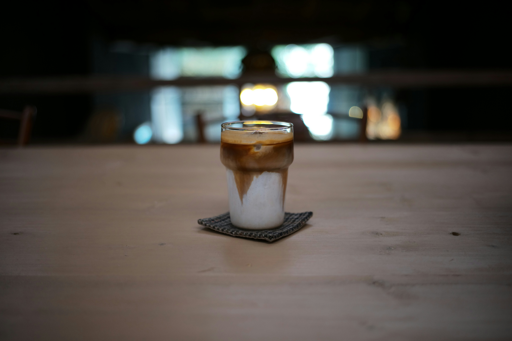
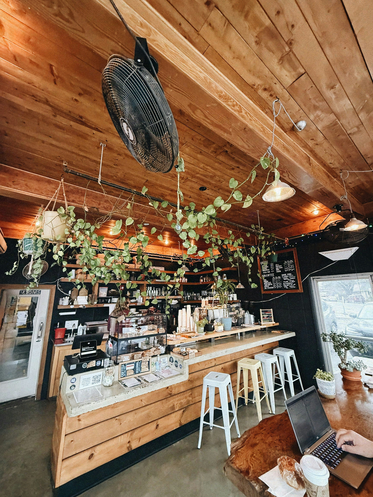

01اسپرسو
غلیظ، عمیق و پرانرژی
از عطر اولین جرعه تا آخرین لحظهٔ حضورت؛ اینجا برای کمی آرامتر زندگی کردن ساخته شده.

از طعم قوی اسپرسو تا لطافت یک لاته؛
فنجان بعدی تو منتظرته.

ما باور داریم بعضی از بهترین لحظههای زندگی سادهاند؛ یک نوشیدنی دلخواه، گفتوگویی صمیمی یا چند دقیقه خلوت با خودت.
اکسیژن جایی است برای فاصله گرفتن از عجلهٔ روزمره و لذت بردن از همین لحظه.
بیشتر با ما آشنا شو ←زندگی همیشه به یک اتفاق بزرگ نیاز ندارد؛
گاهی یک قهوهٔ خوب کافی است.
جزئیات کوچک، حسهای بزرگ.
برای یک قهوهٔ خوب و چند دقیقه آرامش، منتظرت هستیم.